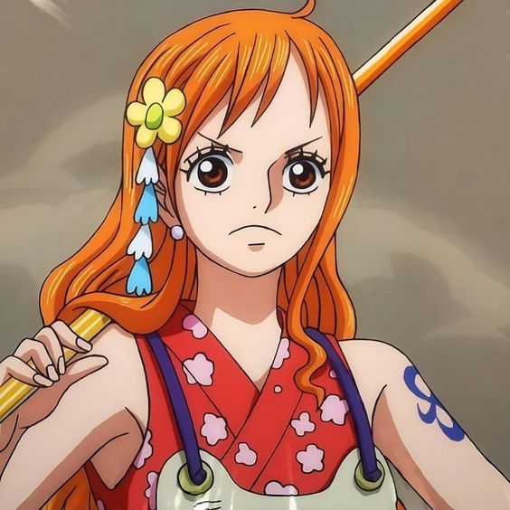
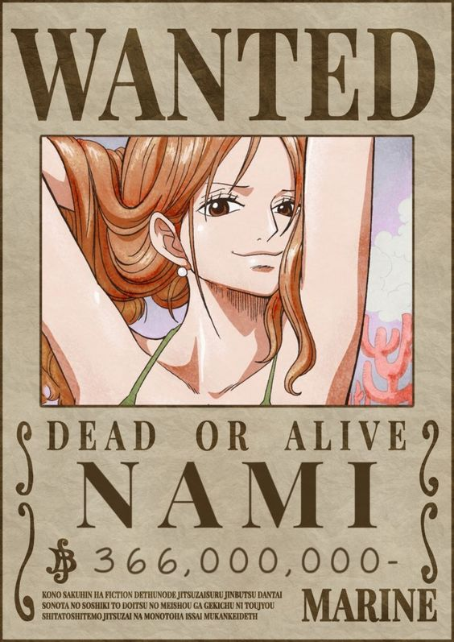
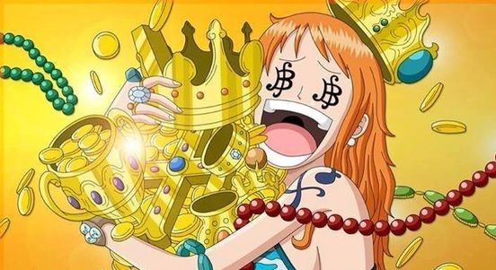
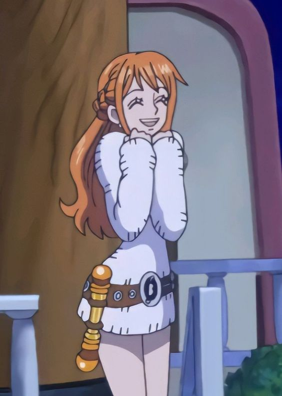

Nami

{kind=link}
Es uno de los personajes principales de One Piece y una miembro valiosa de los Piratas del Sombrero de Paja. Es conocida como "Nami, la navegante" y es la cartógrafa y navegante experta de la tripulación. Nami tiene una personalidad fuerte y decidida. Al principio de la serie, se presenta como una ladrona astuta y egoísta que utiliza su belleza y encanto para manipular a los hombres y robar sus pertenencias. Sin embargo, se revela que su verdadero objetivo es reunir suficiente dinero para comprar su aldea natal, que había sido oprimida por los piratas. A medida que la historia avanza, Nami se convierte en una amiga leal y valiosa para Luffy y el resto de la tripulación.

{kind=link}
La habilidad más destacada de Nami es su destreza como navegante. Ella tiene un profundo conocimiento de los mares, las corrientes, los vientos y la meteorología, lo que le permite trazar rutas precisas y seguras para los Piratas del Sombrero de Paja. Nami es experta en el manejo de brújulas, mapas y otros instrumentos de navegación. Además de sus habilidades de navegación, Nami es una combatiente competente. Aunque no posee poderes sobrenaturales como otros personajes, utiliza su inteligencia y su habilidad con el clima para enfrentarse a los enemigos. Nami lleva consigo un arma especial llamada "Clima-Tact", que le permite manipular el clima y crear ataques basados en el viento, rayos y nubes.

{kind=link}
Nami es conocida por su amor al dinero y su afán por el tesoro, pero también demuestra un gran sentido de la justicia y se preocupa profundamente por sus seres queridos. A lo largo de la serie, desarrolla una estrecha amistad con los demás miembros de la tripulación y se convierte en una figura clave en la protección y el bienestar de la misma. Nami es una navegante experta, ladrona convertida en aliada y una amiga leal en los Piratas del Sombrero de Paja. Su habilidad para navegar y su capacidad para controlar el clima la convierten en un miembro valioso de la tripulación. A medida que la historia avanza, Nami demuestra su valentía y determinación mientras persigue sus objetivos y protege a sus compañeros.
